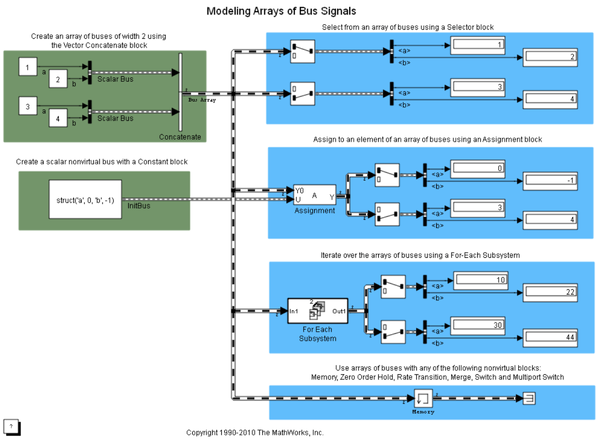

Modeling Arrays of Buses
This demo illustrates the use of arrays of buses in Simulink® to represent structured data compactly, eliminating the need to include multiple copies of the same buses.You can also use For Each subsystems to iteratively process each element of the bus array.
In this demo, the array of buses is created using a Vector Concatenate block. The input bus signals to the Concatenate block must be nonvirtual and of the same type (that is, have the same names, hierarchies and attributes for the leaf elements).
The demo also illustrates the use of the Selector and Assignment blocks to select from and assign into the array of buses.
